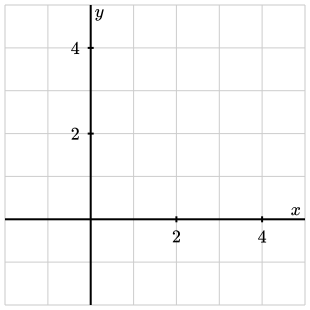
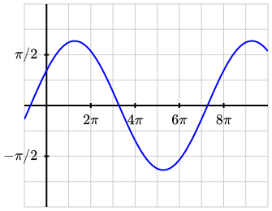
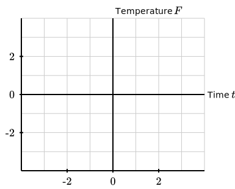
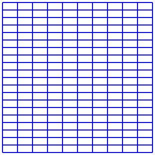
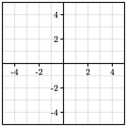
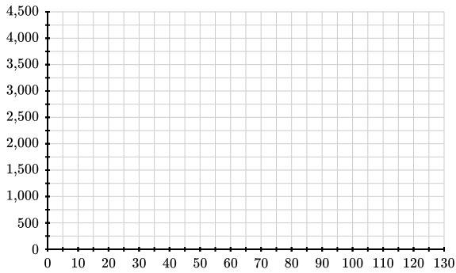
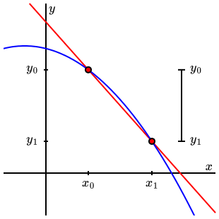

Section 3.3 Grid and Axes
We’ll begin our discussion of graphical elements by looking at grids and axes, which will typically be in the background of a diagram. Since these are commonly used elements, there are many features that can be customized by an author.
Subsection 3.3.1 <grid-axes>
The simplest way to include a grid and axes in a diagram is with the
<grid-axes> element, which is demonstrated in Figure 3.3.1. This element is convenient way to add both a <grid> and <axes>, which are both described below. The attributes given to a <grid-axes> element will be passed on the <grid> and <axes>.

<grid-axes> element.<diagram dimensions="(300,300)" margins="5">
<coordinates bbox="(-2,-2,5,5)">
<grid-axes xlabel="x" ylabel="y"/>
</coordinates>
</diagram>
Notice that PreFigure makes choices about the spacing of the grid lines and the locations at which labels are added to the axes. All of these features can be modified as will be described in the next two subsections, Subsection 3.3.2 and Subsection 3.3.3.
To place the grid lines and label locations at multiples of \(\pi\text{,}\) add the attributes
@h-pi-format="yes" or @v-pi-format="yes", as illustrated in Figure 3.3.3. These attributes may be individually applied to a <grid> or <axes> element.

@h-pi-format and @v-pi-format attributes.<diagram dimensions="(300,250)" margins="(30,5,5,5)">
<coordinates bbox="(-pi, -pi, 10*pi, pi)">
<definition>f(x)=2*cos(x/4-1)</definition>
<grid-axes h-pi-format="yes"
v-pi-format="yes"/>
<graph function="f"/>
</coordinates>
</diagram>
The
@xlabel and @ylabel tags are optional but provide a simple way to label the axes. We will have a lot more to say about labels later, but these particular labels will be processed by MathJax as if they were contained in an @m element.
If a diagram has a lot of graphical components, you may want the axes to appear on the outside of the diagram rather than where \(y=0\) and \(x=0\text{.}\) You can use the
@h-frame and @v-frame attributes to do this, as illustrated in Figure 3.3.5. The possible values @h-frame="bottom","top" and @v-frame="left","right".

@h-frame and @v-frame.<diagram dimensions="(300,250)" margins="(35,30,50,30)">
<coordinates bbox="(-4, -4, 4, 4)">
<grid-axes h-frame="bottom"
v-frame="left"/>
<axes decorations="no">
<xlabel>Time <m>t</m></xlabel>
<ylabel alignment="ne">Temperature <m>F</m></ylabel>
</axes>
</coordinates>
</diagram>
We will also discuss annotations in more depth later, but it is worth mentioning now that a
<grid-axes> element will automatically annotate itself as the first component in the annotation tree.
Subsection 3.3.2 Grids
The
<grid> element provides a grid without adding axes. Without any attributes, this element will choose horizontal and vertical spacings and draw the grid lines @stroke="lightgray" and @thickness="1". The stroke attributes can be modified as can the spacings using the @spacings attribute. The value of the @spacings consists of two lists, one for each of the horizontal and vertical grid lines, with each list having the form (start, space, end). Figure 3.3.7 provides an example.

<grid> element.<diagram dimensions="(300,300)" margins="5">
<coordinates bbox="(0,0,10,10)">
<grid spacings="((0,1,10),(0,1/2,10))" stroke="blue"
thickness="2"/>
</coordinates>
</diagram>
Including a
@basis attribute will produce a grid drawn in the given basis, as shown in Figure 3.3.9.
@basis="((2,1),(1,2))".When included in a
<grid-axes> element, these attributes will be inherited by the resulting grid.
Subsection 3.3.3 Axes
Axes are a bit more involved since there is a wider range of properties they possess. For instance, an
<axes> tag with no attributes will produce axes similar to those seen in Figure 3.3.10. In addition to the axes, we see that there are tick marks and labels as well. The positions of the tick marks and labels are automatically generated.
<axes> element without attributes.There are attributes that may be used to change this default behavior.
- decorations
- Setting
@decorations="no"suppresses the automatic inclusion of tick marks and labels and produces unadorned axes. Regardless of the value of this attribute, features may be customized and added to the axes by including some of the following attributes. - xlabel and ylabel
- As we have seen
@xlabel="t"and@ylabel="f(t)"will place labels on the horizontal and vertical axes. These labels will be automatically wrapped in<m>elements and processed as LaTeX by MathJax. - hticks and vticks
- These attributes specify the position of tick marks on the axes. For instance,
@hticks="(-2,2,4)"will place tick marks on the horizontal axis beginning at -2 and ending at 4 with a spacing of two units. - tick-size
- This attribute controls the length of the tick marks. If a single number is given, such as
@tick-size="5", then the tick mark will extend 5 SVG units on either side of the axis. If a pair is given, such as@tick-size="(10,5)", then the mark extends 10 units below or to the left of the axis and 5 units above or to the right of the axis. - hlabels and vlabels
- These attributes are similar to
@hticksand@vticksexcept they specify the position of labels on the axes. - h-zero-label, v-zero-label
- Labels on an axis that would appear at zero are removed by default to prevent a collision with the other axis. This removal can be prevented using the attributes
@h-zero-label="yes"and@v-zero-label="yes". - label-commas
- Labels corresponding to large numbers will, by default, represented using commas, such as “1,234,567”. To disable this, using
@label-commas="no". - axes
- This attribute, whose possible values are
"all", which is the default,"horizontal", and"vertical"controls which axes are drawn. For instance, using@axes="horizontal"simply provides a horizontal number line decorated according to the values of the other attributes. - bounding-box
- Setting
@bounding-box="yes"draws the current box in addition to the axes. - arrows
- Arrows may be placed on ends of the axes by setting the
@arrowsattribute. If@arrows="1", then arrows will be included in the direction of increasing coordinates.@arrows="2"includes arrows at each end of the axes. - stroke and thickness
- These attributes determine, in the usual way, the color and thickness with which the axes are drawn.
Figure 3.3.11 illustrates the use of some of these attributes.
<axes> element.<diagram dimensions="(300,300)" margins="5">
<coordinates bbox="(-2,-2,5,5)">
<axes xlabel="\alpha" ylabel="g(\alpha)"
hticks="(-2,1,5)" hlabels="(-2,1,5)"
arrows="1"/>
</coordinates>
</diagram>

@axes="horizontal" while the diagram on the right sets @tick-size="(6,0)" and adds @bounding-box="yes".In Figure 3.3.14, labels on the axes at the zero position are included using the attributes
@h-zero-label and @v-zero-label. The commas included in the labels can be removed by setting @label-commas="no".

<diagram dimensions="(500,300)" margins="(60,30,15,15)">
<coordinates bbox="(0,-0.1,130,4500)">
<grid-axes
vticks="(0,250,4500)"
hticks="(0,5,130)"
hlabels="(0,10,130)"
vlabels="(0,500,4500)"
h-zero-label="yes"
v-zero-label="yes"
spacings="((0,5,130),(0,250,4500))"/>
</coordinates>
</diagram>
The
@xlabel and @ylabel attributes are included so that simple labels may be added to the axes with ease. More complicated labels can be added with <xlabel> and <ylabel> elements inside of an <axes> or <grid-axes> element. By default, these will be place to the right of the horizontal axis and directly above the vertical axis, as seen in Figure 3.3.16. This behavior can be modified using the usual <label> attributes described in Section 3.4.
<axes> element.<diagram dimensions="(300,250)" margins="(35,30,50,30)">
<coordinates bbox="(-4, -4, 4, 4)">
<axes decorations="no">
<xlabel>Time <m>t</m></xlabel>
<ylabel alignment="ne">Temperature <m>F</m></ylabel>
</axes>
</coordinates>
</diagram>
As with grids, these attributes may be included in a
<grid-axes> element and inherited by the resulting axes.
Subsection 3.3.4 Tick marks
One may wish to add tick marks to axes, or some other component, to call attention to special locations. As illustrated in Figure 3.3.18, the
<tick-mark> element accomplishes this.

<diagram dimensions="(300,300)" margins="5">
<definition>x0 = 1</definition>
<definition>x1 = 2.5</definition>
<definition>f(x)=3-(x+0.5)^2/4</definition>
<definition>y0 = f(x0)</definition>
<definition>y1 = f(x1)</definition>
<definition>scale_x=3.2</definition>
<coordinates bbox="(-1,-1,4,4)">
<axes decorations="no" xlabel="x" ylabel="y"/>
<tick-mark location="x0">
<m>x_0</m>
</tick-mark>
<tick-mark location="x1">
<m>x_1</m>
</tick-mark>
<tick-mark location="y0" axis="vertical">
<m>y_0</m>
</tick-mark>
<tick-mark location="y1" axis="vertical">
<m>y_1</m>
</tick-mark>
<line endpoints="((x0,y0),(x1,y1))" stroke="red" infinite="yes"/>
<graph function="f"/>
<point p="(x0,y0)"/>
<point p="(x1,y1)"/>
<line endpoints="((scale_x,y0),(scale_x,y1))" stroke="black"/>
<tick-mark location="(scale_x, y0)" axis="vertical" size="5"
alignment="east" offset="(8,0)">
<m>y_0</m>
</tick-mark>
<tick-mark location="(scale_x, y1)" axis="vertical" size="5"
alignment="east" offset="(8,0)">
<m>y_1</m>
</tick-mark>
</coordinates>
</diagram>
A
<tick-mark> element has an @axis attribute, whose value is either "horizontal", the default, or "vertical", depending on whether the tick mark should be drawn on the horizontal or vertical axis. If the diagram has previously added an <axes> or <grid-axes> element, then the tick mark will be drawn using the properties, such as the framing, of that element.
The location of the mark is given by
@location. If a single number is given for the @location, then the tick mark will be drawn on the specified axis. However, if the value of @location is a point, then the tick mark will be drawn at that location.
For a non-tactile diagram, the length of the tick mark can be specified using the
@size attribute. The value of the @size attribute is either a single number that describes how far the tick mark extends on either side of the axis or a pair that describes how far above and below (or left and right) of the @location the tick mark should extend.
Notice also that a
<tick-mark> element can contain a label and accompanying attributes.